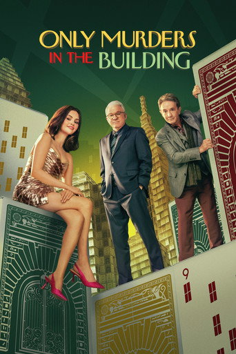
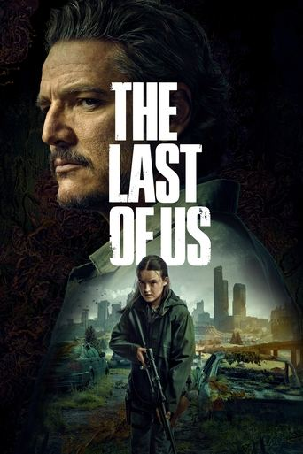
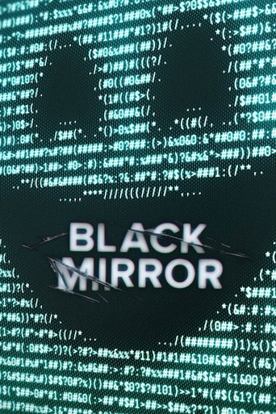

Quick watched actions
Three ways to record the next episode directly from Continue or Watchlist. Each action is explicit, reversible in the prototype, and keeps the user on the current library page.
Option 1 · Recommended
Direct trailing action
Fastest and clearest. The button names exactly what will happen.
Continue
Next episode| Title | Progress | Next episode | |
|---|---|---|---|
SiloApple TV+ | Season 2 (12 / 20) | S2 E3 · SoloAvailable now |
Watchlist
Not started| Title | Genre | First episode | |
|---|---|---|---|
 Only Murders in the BuildingFX / Hulu | Comedy, Mystery | S1 E1 · True CrimeStarts the show |
Watchlist behavior: marking S1 E1 watched changes the canonical status to Watching and moves the show to Continue if another episode is available.
Option 2
Inline watched checkbox
Compact and naturally reversible, but the label carries less context than a button.
Continue
 The Last of UsSeason 2 (11 / 16) | S2 E5 · Feel Her LoveNext episode |
Watchlist
 Black MirrorNetflix | S1 E1 · The National AnthemFirst episode |
Unchecking immediately reverses the prototype action. Production should restore the last server-confirmed state if the request fails.